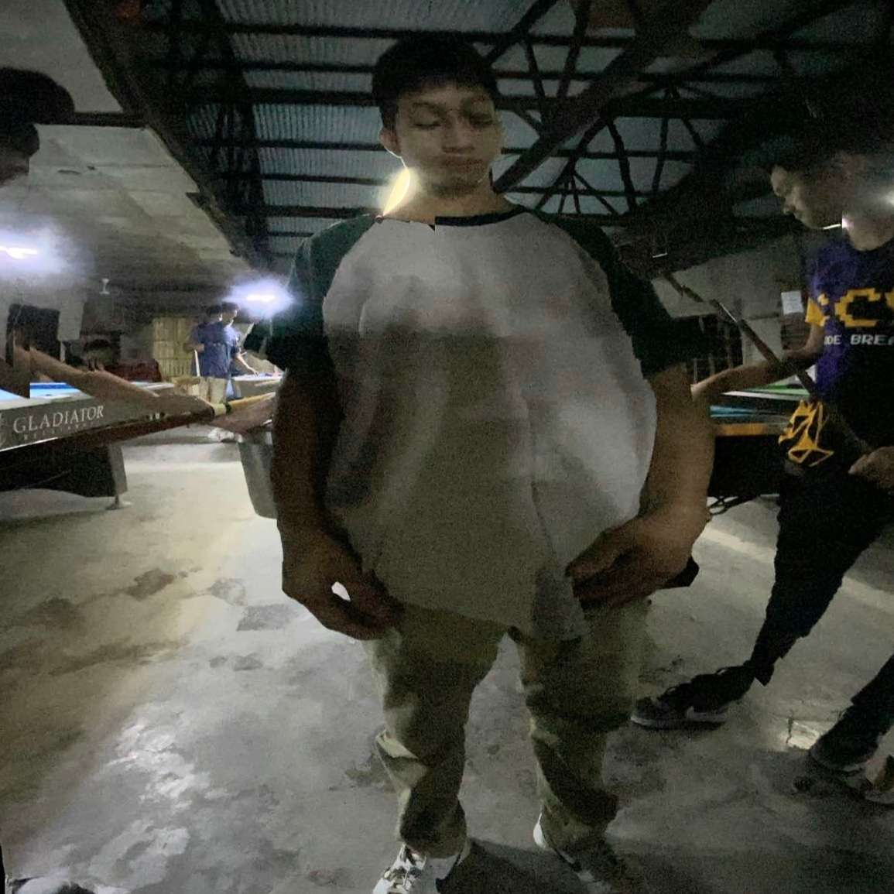
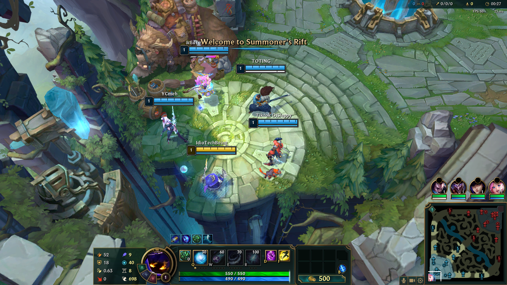
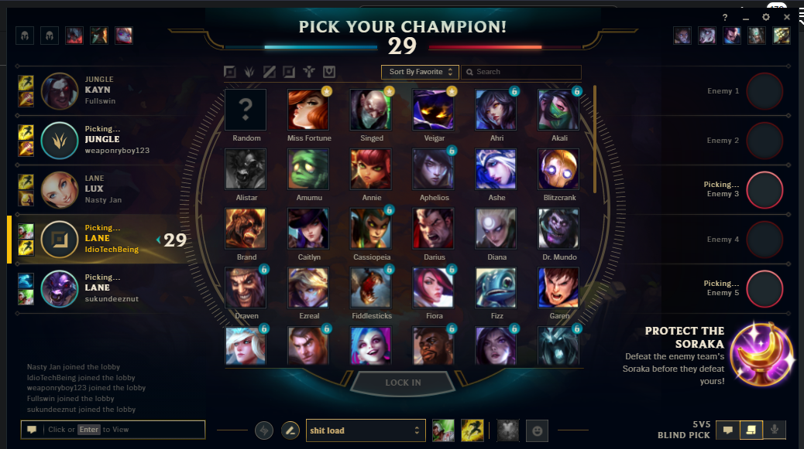

ManokNiNinongAntonio is all about
Roasted chicken, a culinary delight that transcends cultural boundaries, is a gastronomic masterpiece celebrated for its succulence and rich flavor profile. This savory dish is created by expertly seasoning and slow-cooking chicken until its skin achieves a tantalizing golden crispiness, while the meat inside remains juicy and tender. The aromatic infusion of herbs and spices during the roasting process imparts a delectable taste that captivates the senses. The art of crafting the perfect roasted chicken involves meticulous care, from the selection of high-quality poultry to the hands-on preparation that ensures a mouthwatering experience for the discerning palate. At our poultry farm, we take pride in maintaining the highest standards of chicken care, providing a stress-free environment, balanced nutrition, and humane treatment. By prioritizing the well-being of our poultry, we contribute to the exceptional quality of our roasted chicken, offering a culinary experience that embodies both taste and ethical consideration.

Let's talk about myself.

My usual game to play which is online

Why Do I choose IT than the other courses?
"I am passionately committed to crafting my future as a web developer and IT specialist, navigating the digital realm with curiosity as my compass and coding as my language. With unwavering determination, I embrace the challenge of transforming intricate lines of code into meaningful solutions, each keystroke propelling me toward the realization of my dream in the ever-evolving landscape of technology."
 REGISTER
LOGIN
MENU
REGISTER
LOGIN
MENU